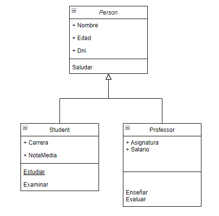

7 Estructura General de un Programa en JAVA
En el mundo de la programación, la estructura del programa consiste en un conjunto de sentencias con su respectiva sintaxis que se aplica de manera general al momento de la creación de un programa en cualquier lenguaje de programación.
Una sentencia es una unidad ejecutable más pequeña de un programa. En otras palabras, una línea de código escrita es una sentencia. Especifica y controla el flujo y orden de ejecución del programa. Una sentencia consta de palabras clave o reservadas como cout, cin, for, while, if ... else, etc., expresiones, declaraciones o llamadas a funciones. Si no existen sentencias específicas de selección o salto, el programa se ejecuta de forma secuencial en el mismo orden en que se ha escrito el código fuente (es el que podríamos considerar orden “natural” de ejecución).
Las sentencias se ejecutan evaluando la expresión. Todos los efectos colaterales de la evaluación son tenidos en cuenta antes de ejecutar la próxima sentencia. La mayoría de sentencias son asignaciones o llamadas a funciones. Un caso especial es la sentencia nula; consiste en un punto y coma (;) aislado. Una sentencia nula no hace nada, pero puede ser necesaria en situaciones en que la sintaxis del lenguaje espere una sentencia pero nuestro programa no necesita hacer nada.
Pueden existir infinitas sentencias distintas e innumerables criterios para su clasificación. Las clases de sentencia son: - De expresión - Compuestas - De selección - De iteración - De salto - De declaración - Bloques de intento - Sentencias de pre proceso - Sentencias ensamblador
Para utilizar los siguientes ejemplos realiza los siguientes pasos previos.
1) crea una clase tipo main.
2) copia lo que está dentro de las llaves de la línea “public static void main(String[] args) {”
3) ejecuta el código en netbeans o vscode, o como hayas configurado.
- De expresión: Son sentencias que consisten en una expresión seguida de un punto y coma (;). La expresión puede ser una asignación, una llamada a un método, una operación aritmética, etc. Por ejemplo:
public class Clasevirtual {
public static void main(String[] args) {
int x,y;
x = 5; // Asigna el valor 5 a la variable x
System.out.println("Hola"); // Llama al método println para mostrar un mensaje
y = x + 3; // Suma el valor de x y 3 y lo guarda en la variable y
System.out.println(y);
}
}Compuestas: Son sentencias que agrupan varias sentencias simples o compuestas entre llaves ({ y }). Se usan para formar bloques de código que se ejecutan como una unidad. Por ejemplo:
{ // Inicio del bloque int a = 10; // Sentencia simple int b = 20; // Sentencia simple if (a > b) { // Sentencia compuesta System.out.println("a es mayor que b"); // Sentencia simple } else { // Sentencia compuesta System.out.println("b es mayor que a"); // Sentencia simple } } // Fin del bloqueDe selección: Son sentencias que permiten elegir entre diferentes opciones de ejecución según se cumpla o no una condición o expresión lógica. Hay dos tipos principales de sentencias de selección: if y switch. Por ejemplo:
if (x > 0) { // Si x es positivo System.out.println("x es positivo"); // Muestra un mensaje } else { // Si x no es positivo System.out.println("x es negativo o cero"); // Muestra otro mensaje } switch (y) { // Según el valor de y case 1: // Si y es 1 System.out.println("y es uno"); // Muestra un mensaje break; // Sale del switch case 2: // Si y es 2 System.out.println("y es dos"); // Muestra otro mensaje break; // Sale del switch default: // Si y no es ni 1 ni 2 System.out.println("y es otro valor"); // Muestra otro mensaje break; // Sale del switch }De iteración: Son sentencias que permiten repetir una o más sentencias mientras se cumpla una condición o un número determinado de veces. Hay tres tipos principales de sentencias de iteración: while, do-while y for. Por ejemplo:
while (x < 10) { // Mientras x sea menor que 10 System.out.println("x es " + x); // Muestra el valor de x x++; // Incrementa x en 1 } do { // Haz System.out.println("y es " + y); // Muestra el valor de y y--; // Decrementa y en 1 } while (y > 0); // Mientras y sea mayor que 0 for (z = 0; z < 5; z++) { // Para z desde 0 hasta 4, incrementando z en 1 System.out.println("z es " + z); // Muestra el valor de z }De salto: Son sentencias que permiten alterar el flujo normal de ejecución de un programa, saltando a otra parte del código. Hay cuatro tipos principales de sentencias de salto: break, continue, return y throw. Por ejemplo:
for (i = 0; i < 10; i++) { // Para i desde 0 hasta 9
if (i == 5) { // Si i es 5
break; // Sale del bucle
}
System.out.println("");De declaración: Son sentencias que permiten declarar variables, constantes, métodos, clases, interfaces, etc. Se usan para definir los identificadores y sus características que se usarán en el programa. Por ejemplo:
int x; // Declara una variable de tipo entero llamada x final double PI = 3.14; // Declara una constante de tipo real llamada PI con el valor 3.14 void imprimir(String s) { // Declara un método que recibe un String y no devuelve nada System.out.println(s); // Muestra el String } class Punto { // Declara una clase llamada Punto int x; // Con un campo de tipo entero llamado x int y; // Con otro campo de tipo entero llamado y } enum Color { // Declara una enumeración llamada Color ROJO, // Con un valor llamado ROJO VERDE, // Con otro valor llamado VERDE AZUL // Con otro valor llamado AZUL } interface Figura { // Declara una interfaz llamada Figura double area(); // Con un método abstracto llamado area que devuelve un double }Bloques de intento: Son sentencias que permiten manejar las excepciones que pueden ocurrir durante la ejecución de un programa, como errores, fallos o situaciones anómalas. Se usan para evitar que el programa se cierre abruptamente y para tomar medidas correctivas o de recuperación. Hay tres tipos principales de bloques de intento: try, catch y finally. Por ejemplo:
try { // Intenta int a = 10; // Declara una variable de tipo entero con el valor 10 int b = 0; // Declara otra variable de tipo entero con el valor 0 int c = a / b; // Intenta dividir a entre b System.out.println("c es " + c); // Muestra el valor de c } catch (ArithmeticException e) { // Captura la excepción de tipo aritmético System.out.println("Error: división por cero"); // Muestra un mensaje de error e.printStackTrace(); // Muestra la traza de la excepción } finally { // Finalmente System.out.println("Fin del programa"); // Muestra un mensaje de fin }Sentencias de preproceso: Son sentencias que se ejecutan antes de la compilación del programa, y que sirven para modificar el código fuente, incluir otros archivos, definir macros, establecer condiciones de compilación, etc. Java no tiene sentencias de preproceso como C o C++, pero tiene algunas directivas que se usan para importar otros paquetes o clases, definir el paquete al que pertenece una clase, o indicar que una clase o un método está obsoleto. Se reconocen por empezar con el símbolo @. Por ejemplo:
import java.util.*; // Importa el paquete java.util package com.example; // Define el paquete com.example @Deprecated // Indica que la clase está obsoleta class MiClase { @Deprecated // Indica que el método está obsoleto void miMetodo() { // Código del método } }Sentencias ensamblador: Son sentencias que se escriben en el lenguaje de bajo nivel del procesador, y que se usan para acceder directamente al hardware, optimizar el rendimiento, realizar operaciones específicas, etc. Java no tiene sentencias ensamblador como C o C++, pero tiene una forma de invocar código nativo escrito en otro lenguaje mediante la interfaz Java Native Interface (JNI). Se reconoce por usar la palabra reservada native. Por ejemplo:
class MiClase { // Declara un método nativo que recibe un int y devuelve un int public native int miMetodo(int x); // Carga la biblioteca que contiene el código nativo static { System.loadLibrary("miBiblioteca"); } }
7.1 ESTRUCTURA GENERAL DE UN PROGRAMA EN JAVA.
La estructura general de un programa orientado a objetos depende del lenguaje de programación que se utilice, pero en general se basa en los siguientes elementos:
Clases: Son las plantillas o modelos que definen las propiedades y los métodos comunes de un conjunto de objetos. Las clases se pueden organizar en jerarquías mediante la herencia, que permite reutilizar y extender el código de las clases superiores a las clases inferiores.
Objetos: Son las instancias o ejemplares de las clases, que tienen un estado (valores de los atributos) y un comportamiento (ejecución de los métodos) específicos. Los objetos se pueden comunicar entre sí mediante mensajes, que son las llamadas a los métodos de otros objetos.
Relaciones: Son los vínculos o conexiones que existen entre las clases y los objetos, que indican cómo se relacionan o interactúan entre sí. Hay diferentes tipos de relaciones, como la asociación, la dependencia, la generalización, la realización, la agregación y la composición.
Veamos paso a paso un ejemplo de un programa orientado a objetos.
Antes de empezar, utilizaremos la imagen que utilizamos en modelamiento y se encuentra a continuación.

Para el ejemplo utilizaremos el nombre de clase “Person”, están indicados los métodos y atributos en privado para mejor entendimiento cambiaremos de privado a default, por lo que el código quería así.
public class Person{
String name; // Atributo 1
int birthDate; // Atributo 2
public Person(String name, int birthDate) { //constructor
this.name = name;
this.birthDate = birthDate;
}
public void isBirthday(){ //método
System.out.println("imprimir la fecha");
}
}Un ejemplo más completo es el siguiente:
// Clase Persona
public class Persona {
// Atributos
String nombre;
int edad;
String dni;
// Constructor
public Persona(String nombre, int edad, String dni) {
this.nombre = nombre;
this.edad = edad;
this.dni = dni;
}
public void saludar() {
System.out.println("Hola, me llamo " + nombre + " y tengo " + edad + " años.");
}
}
// Clase Estudiante que hereda de Persona
public class Estudiante extends Persona {
// Atributos
public String carrera;
public double notaMedia;
// Constructor
public Estudiante(String nombre, int edad, String dni, String carrera, double notaMedia) {
// Llamada al constructor de la superclase
super(nombre, edad, dni);
this.carrera = carrera;
this.notaMedia = notaMedia;
}
public void estudiar() {
System.out.println("Estoy estudiando " + carrera + ".");
}
public void examinar() {
System.out.println("Me voy a examinar de " + carrera + ".");
}
// Sobrescritura del método saludar de la superclase
@Override
public void saludar() {
System.out.println("Hola, soy " + nombre + ", estudiante de " + carrera + " y tengo una nota media de " + notaMedia + ".");
}
}
// Clase Profesor que hereda de Persona
public class Profesor extends Persona {
// Atributos
String asignatura;
double salario;
// Constructor
public Profesor(String nombre, int edad, String dni, String asignatura, double salario) {
// Llamada al constructor de la superclase
super(nombre, edad, dni);
this.asignatura = asignatura;
this.salario = salario;
}
public void enseñar() {
System.out.println("Estoy enseñando " + asignatura + ".");
}
public void evaluar() {
System.out.println("Voy a evaluar a mis alumnos de " + asignatura + ".");
}
// Sobrescritura del método saludar de la superclase
@Override
public void saludar() {
System.out.println("Hola, soy " + nombre + ", profesor de " + asignatura + " y cobro " + salario + " euros al mes.");
}
}
// Clase principal con el método main
public class Main {
public static void main(String[] args) {
// Creación de objetos
Persona p1 = new Persona("Ana", 25, "12345678A");
Estudiante e1 = new Estudiante("Luis", 20, "87654321B", "Informática", 8.5);
Profesor pr1 = new Profesor("Pedro", 35, "45678912C", "Matemáticas", 1500);
// Llamada a los métodos de los objetos
p1.saludar();
e1.saludar();
pr1.saludar();
e1.estudiar();
pr1.enseñar();
}
}Todo el código pertenece al siguiente esquema.

Este programa define tres clases: Persona, Estudiante y Profesor. La clase Estudiante y la clase Profesor heredan de la clase Persona, lo que significa que comparten sus atributos y métodos, y añaden algunos propios. El programa crea tres objetos: uno de cada clase, y llama a sus métodos. El resultado es el siguiente:
Hola, me llamo Ana y tengo 25 años.
Hola, soy Luis, estudiante de Informática y tengo una nota media de 8.5.
Hola, soy Pedro, profesor de Matemáticas y cobro 1500 euros al mes.
Estoy estudiando Informática.
Estoy enseñando Matemáticas.